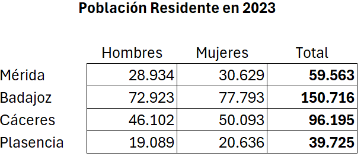
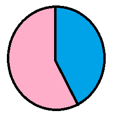
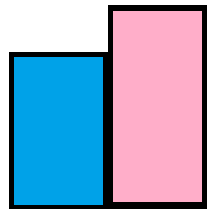

Cartografía de diseño
Con los siguientes datos, cada grupo de trabajo hará un mapa temático de la población de las principales ciudades de Extremadura:

Se podrá emplear la simbología que se desee. Algunos ejemplos:
| Símbolos icónicos | |
| Diagramas proporcionales |  |
| Barras proporcionales |  |